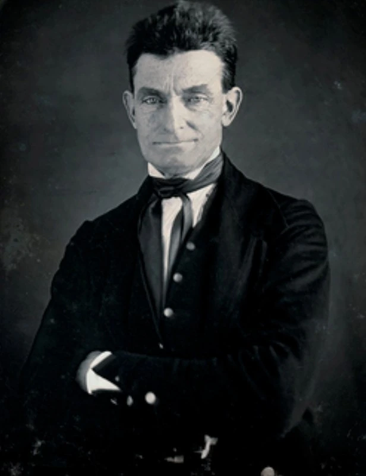

John Brown
John Brown believed slavery was a terrible moral wrong—and eventually decided that words, petitions, and politics were not enough to destroy it. Over several turbulent years he fought proslavery forces in Kansas, helped enslaved people escape from Missouri, worked with well-known abolitionists, and finally led an armed raid on Harpers Ferry. His actions made him one of the most admired and hated Americans of the 1850s.
 Brown's story forces a difficult question: when people are fighting an unjust system, can violence ever be justified?
Brown's story forces a difficult question: when people are fighting an unjust system, can violence ever be justified?

John Brown
John Brown spent his life becoming more determined—and more radical—in his fight against slavery. To supporters, he was a man willing to sacrifice everything for freedom; to critics, his use of violence made him a dangerous murderer. His failed raid made him a national symbol and deepened the argument over slavery just before the Civil War.
Before the Famous Beard

Brown was born in Connecticut in 1800 and grew up mainly in Ohio in a deeply religious family that opposed slavery. His father, Owen Brown, supported antislavery causes, and John carried that belief into adulthood.
Brown tried many ways to earn a living. He worked as a tanner, farmer, wool dealer, land speculator, and businessman, with mixed success. He married twice, raised a large family, moved often, and spent years far from the national spotlight. Through all of those changes, however, his opposition to slavery became more intense.
By the 1840s and 1850s, Brown had formed relationships with Black abolitionists and communities of formerly enslaved people. He lived for a time in North Elba, New York, near a settlement created to help Black families become landowners. Unlike many antislavery activists who insisted on peaceful persuasion, Brown became a abolitionist who was increasingly militant. He came to believe that slavery was itself violent and that ending it might require violence in return.


These terms appear throughout the John Brown topic. Hover over highlighted vocabulary on the other pages for a quick definition.
A Life Moving Toward Conflict

Was John Brown a freedom fighter, a dangerous fanatic, a murderer—or some combination of these?